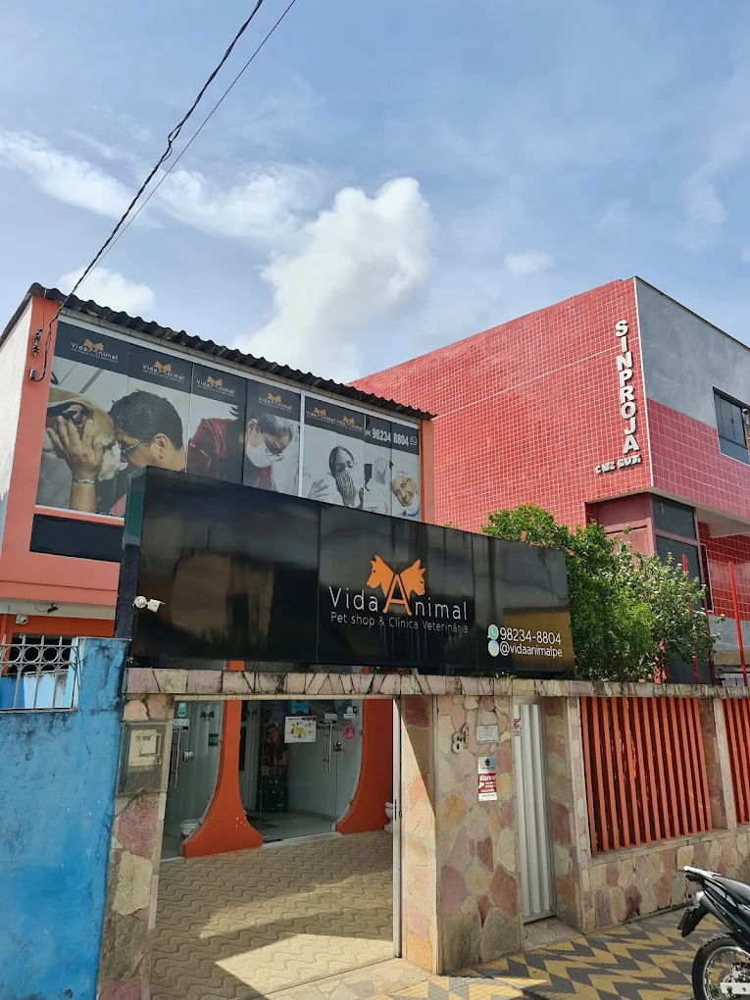

Falta de ar
Respiração ofegante mesmo parado, língua ou gengiva arroxeada.

Abrir rota no Google Maps →Guarde o endereço agora. Na hora do susto, ninguém quer estar procurando.
AuQmia é o plano de saúde da Vida Animal. Aqui o seu cachorro e o seu gato são atendidos com carinho, cuidado e respeito.
A nota está no Google, aberta para qualquer pessoa conferir. Estas são algumas das avaliações, no texto em que foram escritas.
4,7
nota no Google
407
tutores avaliaram
24h
aberto todo dia
“Há mais de 10 anos cliente de Dr Paulo (profissional excelente) e Dra Fernanda.”
“Atendimento de primeira, artigos no padrão, preço dentro da realidade.”
“Melhor clínica e melhores profissionais que conheço. Super indico, meus pets 💚Sírius e ori💚 tem o plano de saúde de lá, AuQmia Saúde, TOP”
É emergência ou dá pra esperar amanhecer? É a pergunta que trava o tutor às três da manhã, e estes seis sinais não esperam o dia clarear.
Respiração ofegante mesmo parado, língua ou gengiva arroxeada.
Passou de dois minutos, ou aconteceu mais de uma vez seguida.
Principalmente com ânsia de vômito sem sair nada.
Vai à caixa, faz força e não sai nada. Em macho, agrava rápido.
Chocolate, remédio de humano, osso cozido ou objeto pequeno.
Mesmo andando normal. Lesão interna não aparece por fora.


 Emergência 24h
Emergência 24h
Da emergência de madrugada ao banho de sábado. Seu pet não muda de endereço nem de quem cuida dele.
Consulta, exame, internação, banho e tosa e pet shop no mesmo endereço. Seu pet não troca de lugar nem de quem cuida dele quando o assunto muda.

Todos os dias, inclusive domingo e feriado. Sem hora de fechar.
Para diluir o custo do cuidado ao longo do ano, com a clínica na palma da mão.
Se for emergência, não escreva: ligue. Para agendamento, dúvida ou orçamento, o WhatsApp resolve.
Aberto 24 horas, todos os dias